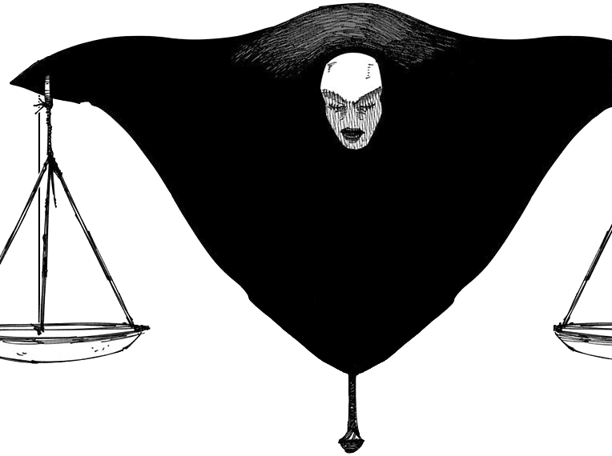

A shrouded four-armed figure with an ominous, expressionless mask. In each of the hands is a gavel, a balancing scale, a watch and a blank contract.
Host: Leonard

SKILLS
| Contractual Restriction [7SP/Round] |
|---|
As a bonus action, you can create a contract for a willing, allied character within 50ft of you. The contract will impose a limitation on them, but bestow them an advantage.
Pick one of the following restrictive effects:
|
| PASSIVE: Intuition for the Truth |
|---|
| As a passive ability, you have advantage on Insight checks pertaining to lies and deception. You are able to claw through those who seek to deceive others for their own gain. |
SIGNATURE
| Leges Ut Omnes Obedi, The Laws That All Obey [6SP/Round] |
|---|
|
As a free action, you will manifest an ethereal domain that spans 90ft from you in a circle. The domain will no longer move once deployed,
and can only be deployed from yourself. Shade of Contracts, will detach from you, going high up in the air, and binds a number of creatures of its choice to a contract.
This ability when used is counted as a Domain for the sake of Domain Clashes.
Binding: A set of rules that every character chosen within domain itself must abide by, only one law can be effective at a time, but as a bonus action you may change it on your turn.
|